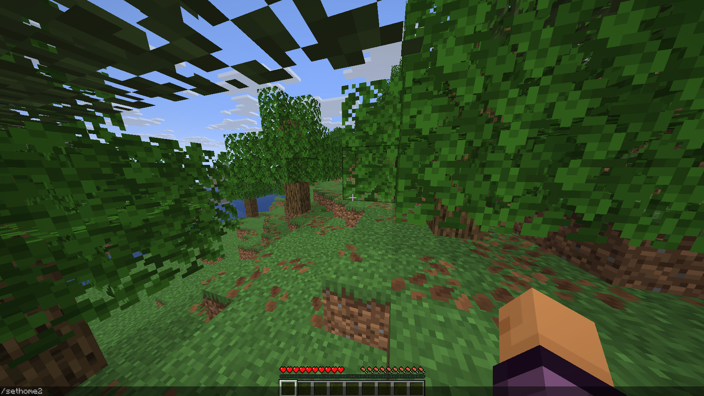
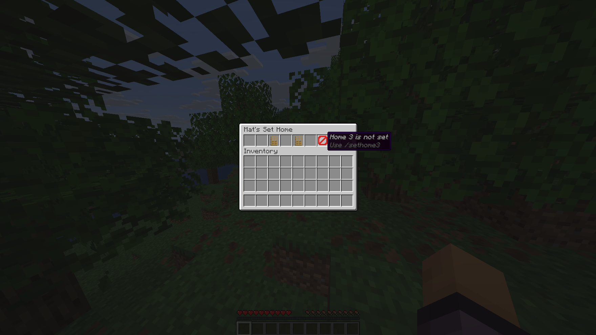

Fabric Mod for Minecraft
Mat's Set Home
With Mat's Set Home, you can save important
locations anywhere in your Minecraft world and
quickly teleport back whenever you need to.
Create up to three homes, return to them using
simple commands and manage everything through
an easy in-game menu.
Lightweight, simple and designed to feel like
a natural part of vanilla Minecraft.
How to use:
Type /sethome, the mod will rememeber the cordinates and teleport you back there whenever you write /home.
You can set up to three homes, by typing /sethome2 or 3, then /home 2 or 3. By typing /matssethome, you can manage your homes.
How It Works
- Stand where you want to save your home.
- Type /sethome to save your first location.
- Use /home anytime to teleport back.
- Create additional homes with /sethome2 and /sethome3.
- Teleport to them with /home 2 and /home 3.
- Open /matssethome to view, manage or remove saved homes.


Features
Why Choose Mat's Set Home?
Up to Three Homes
Save up to three different locations in your world and move between them with ease.
Simple Commands
Use straightforward commands such as /sethome and /home.
Management Menu
Open /matssethome to view, manage or remove all your saved homes.
Exact Location Saving
Each home remembers the exact coordinates where it was created.
Instant Teleportation
Return to your saved locations instantly without long travel times.
Lightweight
Built to be simple, fast and have almost no performance impact.